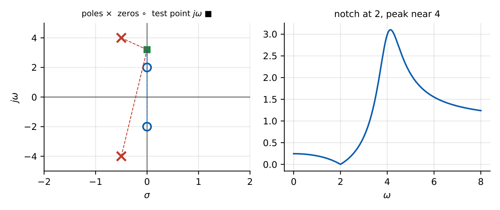
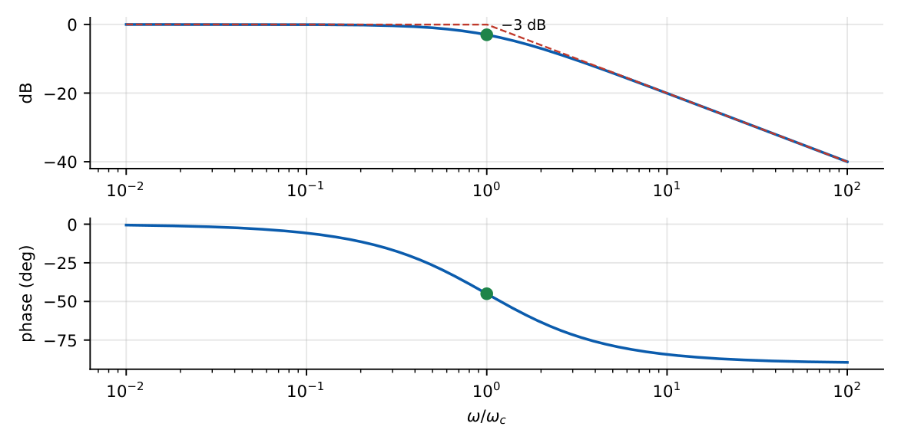
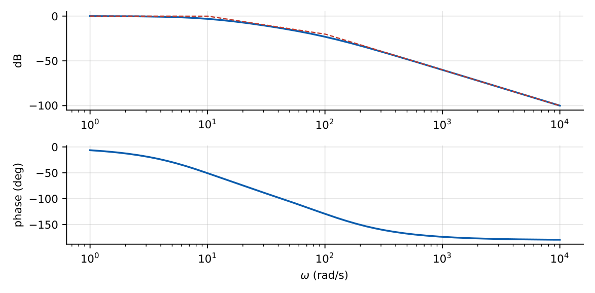
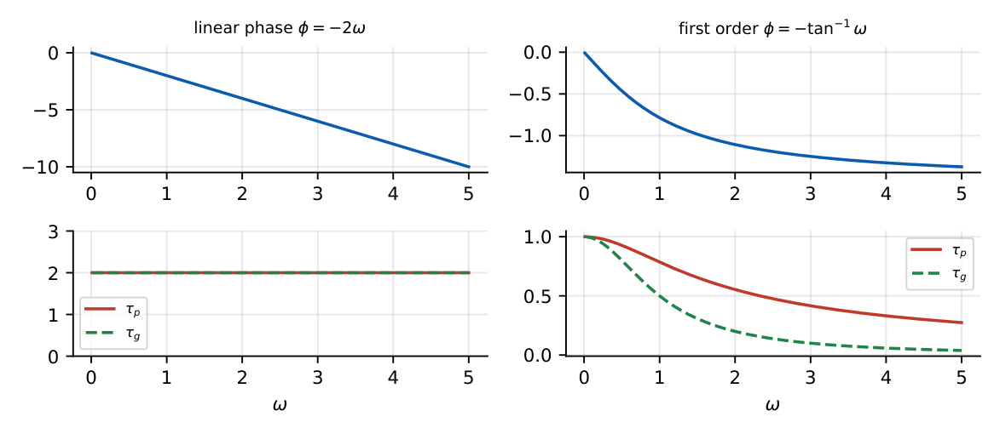
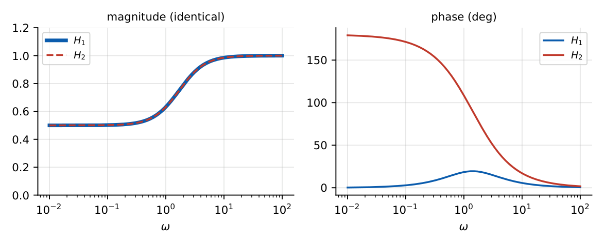
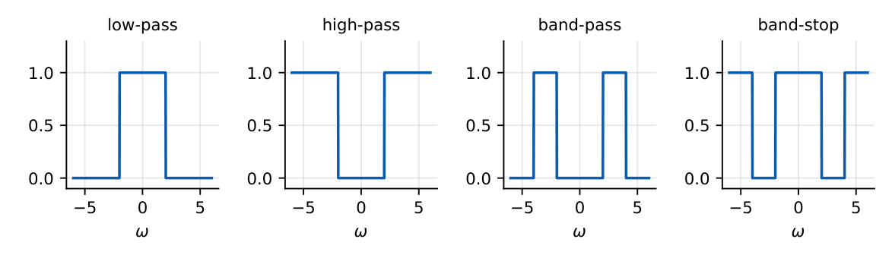

Frequency Response
In this chapter
Output of an LTI system for a sinusoidal input, first- and second-order Bode asymptotes, phase and group delay, ideal filters (non-causal), minimum-phase and all-pass systems, linear phase \(\Rightarrow\) distortionless.
20.1 Transfer function
For a stable LTI system the frequency response is \(H(j\omega)=\displaystyle\int h(t)e^{-j\omega t}dt=H(s)|_{s=j\omega}\). Since \(e^{j\omega t}\) is an eigenfunction, the response to \(x(t)=A\cos(\omega_0t+\phi)\) is
\(y(t)=A\,|H(j\omega_0)|\cos\big(\omega_0t+\phi+\angle H(j\omega_0)\big)\).
\(H(s)=\dfrac{1}{1+s/1000}\), \(x=10\cos1000t\): \(H(j1000)=\dfrac1{1+j}=0.707\angle-45^\circ\), so \(y=7.07\cos(1000t-45^\circ)\).
20.2 Magnitude response
\(|H(j\omega)|\), often in decibels: \(20\log_{10}|H|\) dB. \(-3\) dB \(\Leftrightarrow|H|=0.707\) (half power); \(-6\) dB \(\Leftrightarrow0.5\); \(-20\) dB \(\Leftrightarrow0.1\); \(+20\) dB \(\Leftrightarrow10\).
20.3 Phase response
\(\angle H(j\omega)=\sum\angle(j\omega-z_k)-\sum\angle(j\omega-p_k)\). Geometric picture: vectors from each zero/pole to the point \(j\omega\) on the imaginary axis; \(|H|=K\prod|\text{zero vectors}|/\prod|\text{pole vectors}|\).
20.4 Amplitude response
For systems with a real “amplitude function” \(A(\omega)\) (e.g. linear-phase FIR), \(H(j\omega)=A(\omega)e^{-j\omega\tau}\) where \(A\) may become negative (sign change \(=\pi\) phase jump). Magnitude is \(|A|\).
20.5 Poles and zeros
A pole near the \(j\omega\) axis at \(\omega_p\) produces a peak in \(|H|\) near \(\omega_p\); a zero near the axis produces a dip; a zero on the axis gives an exact null (notch). Poles/zeros far from the axis have gentle effects.

20.6 Bode-plot concepts
For \(H(s)=K\prod(1+s/z_k)/\prod(1+s/p_k)\): on a log-frequency axis the magnitude (dB) is the sum of straight-line asymptotes.
- Constant \(K\): flat \(20\log K\). Pole at \(p\): \(0\) dB below \(p\), then \(-20\) dB/decade. Zero at \(z\): \(0\) dB, then \(+20\) dB/decade. Origin pole: \(-20\) dB/dec through \(0\) dB at \(\omega=1\).
- Phase of a pole: \(0^\circ\to-45^\circ\) at \(\omega=p\) \(\to-90^\circ\) (changes over \(0.1p\) to \(10p\), \(-45^\circ\)/decade). A zero gives the opposite sign.
- Actual curve differs from the asymptote by \(3\) dB at the corner; complex poles give a peak \(\approx1/(2\zeta)\).

\(H(s)=\dfrac{1000}{(s+10)(s+100)}\): DC gain \(1\) (\(0\) dB). Corners at \(10\) and \(100\) rad/s: slope \(-20\) dB/dec between them, \(-40\) dB/dec beyond \(100\). At \(\omega=1000\): \(|H|=\dfrac{1000}{\sqrt{10^6+100}\sqrt{10^6+10^4}}\approx1.0\times10^{-3}\), i.e. \(-60\) dB, matching the asymptote (\(-20\log(100/10)-40\log(1000/100)=-20-40\)).

20.7 Phase delay
\(\tau_p(\omega)=-\dfrac{\angle H(j\omega)}{\omega}\): the time delay of a single sinusoid.
20.8 Group delay
\(\tau_g(\omega)=-\dfrac{d\angle H(j\omega)}{d\omega}\): the delay of the envelope of a narrow-band signal near \(\omega\).
Example: \(H=e^{-j\omega T_0}\) (pure delay): \(\tau_p=\tau_g=T_0\). First-order low-pass: \(\angle H=-\tan^{-1}\omega\tau\), \(\tau_g=\dfrac{\tau}{1+\omega^2\tau^2}\).
20.9 Linear phase
Distortionless transmission: \(y(t)=Kx(t-t_d)\), i.e. \(H(j\omega)=Ke^{-j\omega t_d}\): constant magnitude and linear phase (constant group delay) over the signal band.

20.10 Minimum-phase systems
A causal stable system whose zeros are also in the left half-plane is minimum phase: among all systems with the same \(|H|\) it has the smallest phase lag and group delay. Flipping a zero across the axis (\(s+a\to s-a\)) leaves \(|H|\) unchanged but increases the magnitude of the phase (excess phase; non-minimum phase). An all-pass system \(\dfrac{s-a}{s+a}\) has \(|H|=1\).

20.11 Causality and frequency response
An ideal low-pass \(|H|=1\) for \(|\omega|<\omega_c\) and \(0\) otherwise has \(h(t)=\dfrac{\sin\omega_ct}{\pi t}\), which is non-zero for \(t<0\): not causal, not realisable. Paley–Wiener: a causal system cannot have \(|H|=0\) over a finite band.

20.12 Stability and frequency response
A stable LTI system has a finite \(H(j\omega)\); the \(j\omega\) axis lies within the ROC of \(H(s)\). For a causal system this means all poles in the open LHP.
Q1. A system \(H(j\omega)=e^{-j3\omega}\) has group delay (A) \(0\) (B) \(3\) (C) \(1/3\) (D) \(\omega\).
Q2. A \(-3\) dB point of a first-order low-pass corresponds to \(|H|=\) (A) \(0.5\) (B) \(0.707\) (C) \(0.1\) (D) \(0.3\).
Q3. Distortionless transmission requires (A) constant magnitude and constant phase (B) constant magnitude and linear phase (C) linear magnitude and constant phase (D) any phase.
Answers: Q1 (B). Q2 (B). Q3 (B).
Q4. The input \(x=\cos t\) is applied to \(H(s)=1/(1+s)\). The output is (A) \(\cos(t-45^\circ)\) (B) \(0.707\cos(t-45^\circ)\) (C) \(0.707\cos(t+45^\circ)\) (D) \(\cos t\).
Q5. For \(H(j\omega)=1/(1+j\omega)\) the group delay at \(\omega=1\) is (A) \(1\) (B) \(0.5\) (C) \(0.707\) (D) \(2\).
Answers: Q4 (B). Q5 (B): \(\tau/(1+\omega^2\tau^2)=1/2\).
Q6. For \(H(j\omega)=1/(1+j\omega)\), \(|H|\) at \(\omega=\sqrt3\) is .
Q7. The phase delay of \(H=1/(1+j\omega)\) at \(\omega=1\) is s (two decimals).
Answers: Q6: \(1/\sqrt{1+3}=0.5\). Q7: phase \(=-\pi/4\), \(\tau_p=(\pi/4)/1=0.79\) s.
Q8. Which statements are true? (A) An ideal low-pass filter is non-causal. (B) A pole at \(s=-a\) (\(a>0\)) gives \(-20\) dB/dec beyond \(a\). (C) All-pass systems have unit magnitude. (D) Minimum-phase systems have all poles and zeros in the RHP.
Answers: Q8: (A), (B), (C).
(i) Group delay is \(-d\phi/d\omega\), phase delay \(-\phi/\omega\): different in general. (ii) Using the asymptote value at the corner (\(0\) dB instead of \(-3\) dB). (iii) \(H(j\omega)\) is defined at the input frequency; no other frequency appears at the output (LTI). (iv) Phase in radians for delay computations.
T1. \(H(s)=\dfrac{10}{s+10}\); find the output for \(x=2\cos10t\). T2. What slope (dB/dec) does \(H=\dfrac{s}{(s+1)(s+100)}\) have at \(\omega=10\)?
Answers: T1: \(H(j10)=1/(1+j)\), \(y=1.414\cos(10t-45^\circ)\). T2: zero at \(0\): \(+20\), pole at \(1\): \(-20\); pole at \(100\) not yet: net \(0\) dB/dec.
- \(y=A|H|\cos(\omega t+\phi+\angle H)\). dB: \(20\log|H|\); \(3\) dB \(\leftrightarrow0.707\).
- Pole: \(-20\) dB/dec beyond corner, phase \(-45^\circ\) at corner; zero: \(+20\).
- \(\tau_p=-\phi/\omega\); \(\tau_g=-d\phi/d\omega\). Distortionless: \(Ke^{-j\omega t_d}\).
- Min phase: zeros/poles in LHP; all-pass \(\frac{s-a}{s+a}\); ideal LPF non-causal.